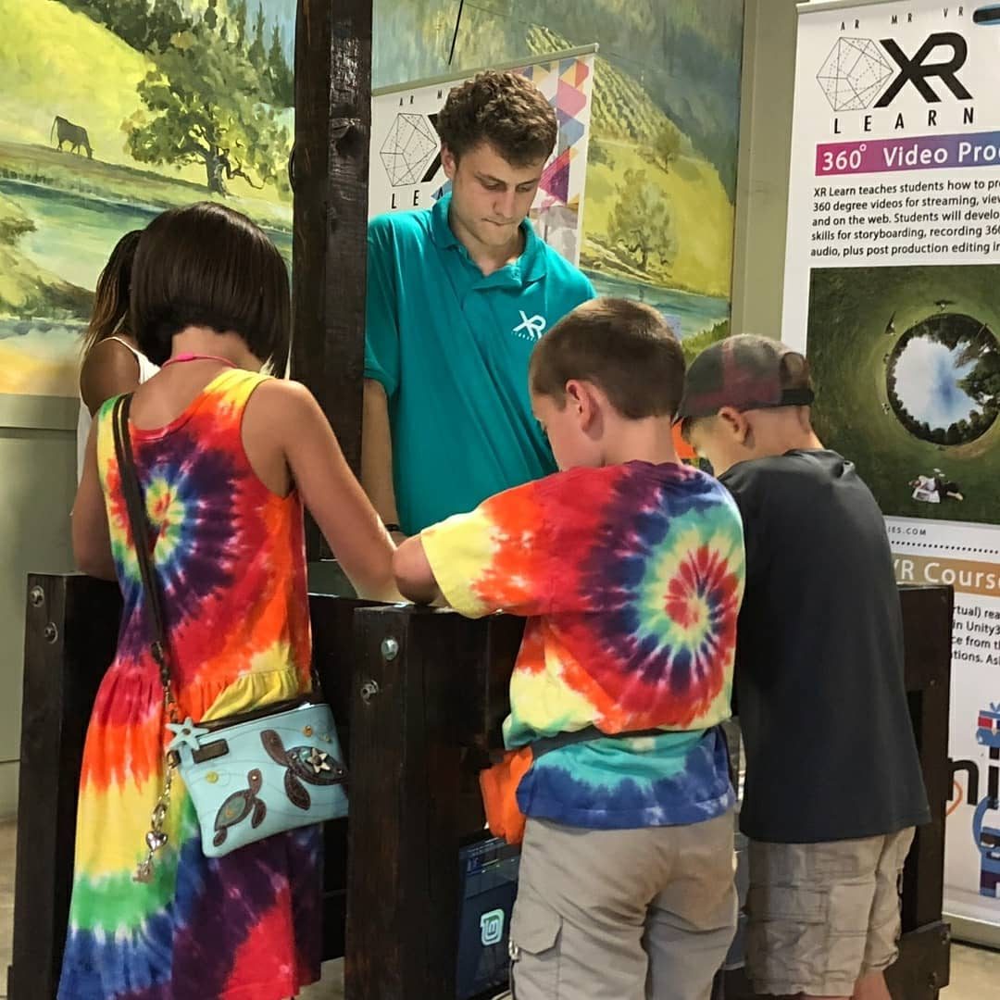
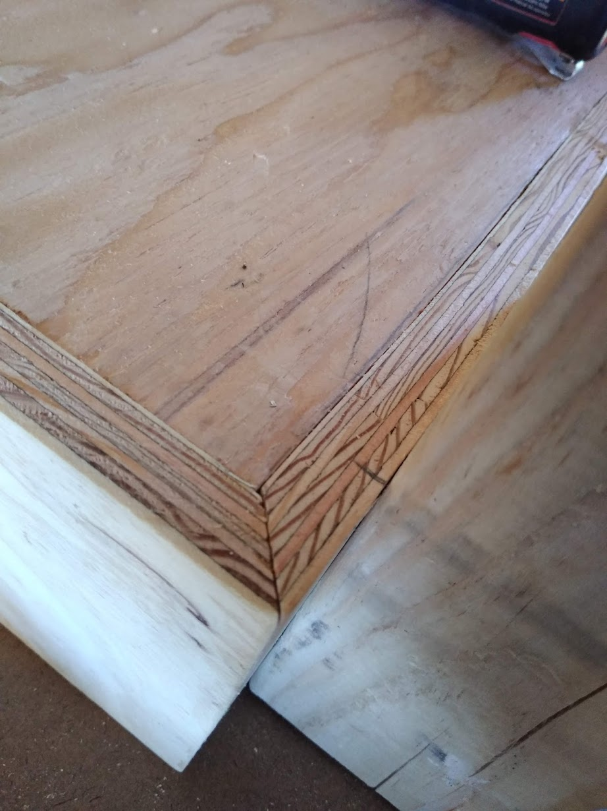
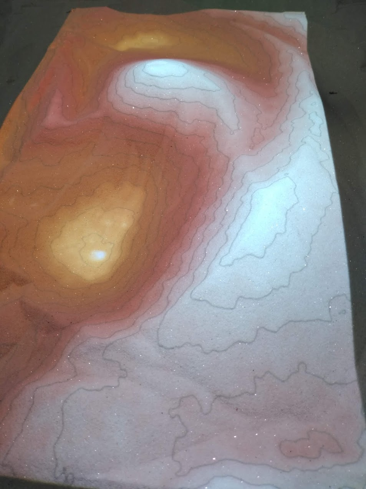

AR Sandbox serves as a accessible introduction to the horizon of AR technology through the power of play
The XR Sanbox is an interactive exhibit spearheaded by Tim Bartolf during his time as an intern at XR Libraries. Built using Software from UC Davis' Keck Center for Active Visualization in the Earth Sciences, the travelling exhibit called for additional solutions in portability, portability, and rapid-setup. Tim singlehandedly designed and built a cost effective alternative to existing models which allowed for easy transportation and deployment across the nation to various confrences and events. The sandbox was featured at the American Library Association confrence as well as the Sausilito Art Festival.


